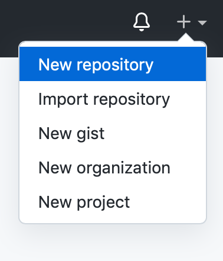
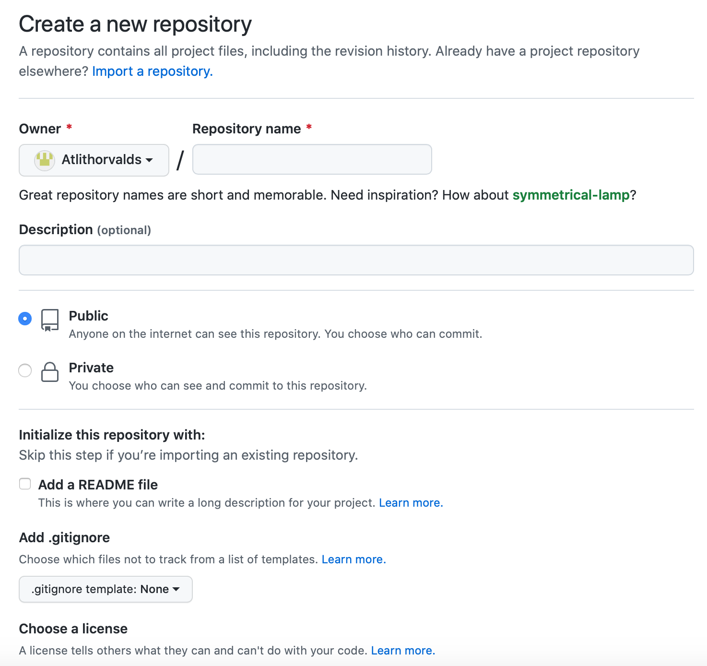
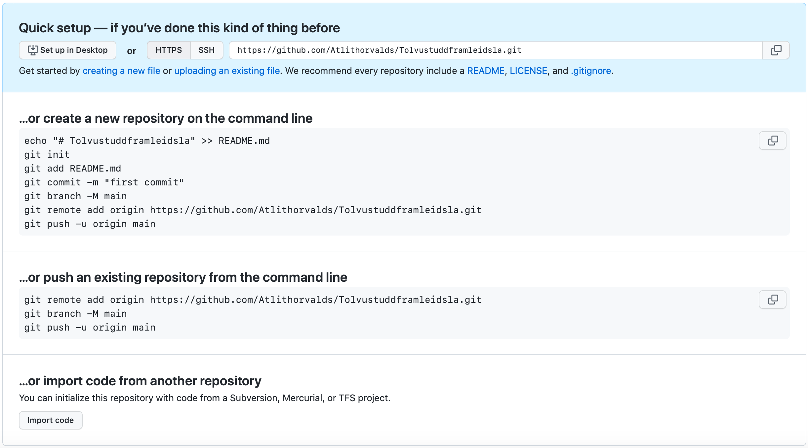
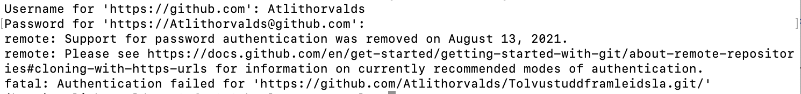
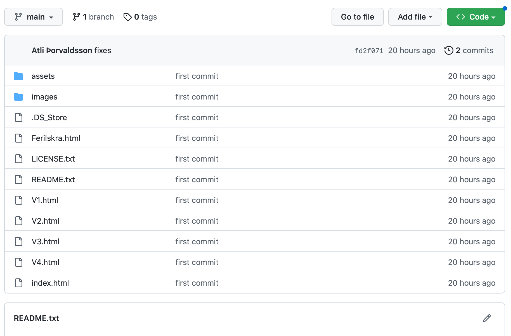
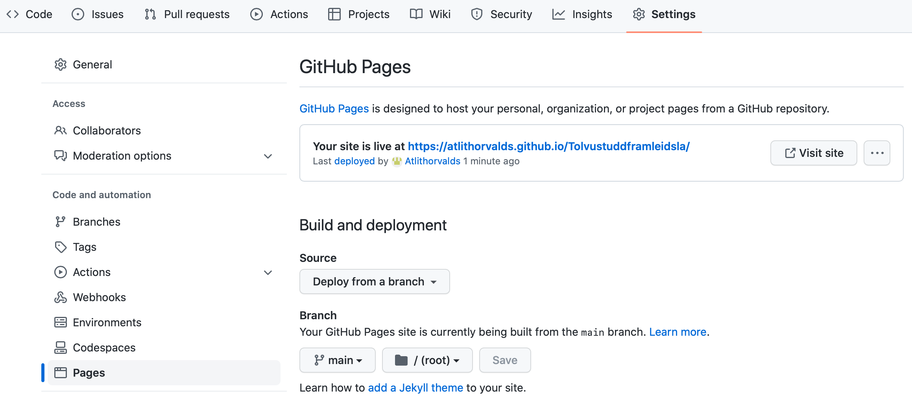

Vefsíða
VERKEFNI 1 Í TÖLVUSTUDDRI FRAMLEIÐSLU - VEFSÍÐUGERÐ
Undirbúningsvinna og kynning á Brackets
Fyrsta verkefni annarinnar var að búa til vel skipulagða vefsíðu sem heldur utan um öll verkefnin sem verða unnin í áfanganum VÉL608G. Það fyrsta sem ég gerði var að lesa vinnulýsinguna á Canvas. Eftir það fór ég að hugsa um það hvernig ég ætlaði mér að hanna og setja upp vefsíðuna. Ég byrjaði því á að horfa á fyrsta kennslumyndbandið. Þegar ég var búinn að horfa á öll fjögur kennslumyndböndin, á fann ég aftur vinnulýsinguna og byrjaði að ná í öll forritin sem ég þurfti Brackets og GitHub. Ég hafði nú þegar kynnst aðeins notkun á HTML í öðru en Brackets en ákvað að nota það sem kennarinn mældi með. Kennarinn nefndi meðal annars að kostir við Brackets væru svokallaður "Live" eiginleiki og eins "Git integration". Ég setti forritin upp og byrjaði að vinna með þau og reyna að læra alla helstu kosti og galla þeirra. Ég fór að skoða vefsíðusniðmát og valdi Spectral frá Html5Up. Næst var að kynnast Brackets betur og að byrja að setja vefsíðuna upp, með það markmið að hún henti sem vinnubók áfangans og í framhaldinu portfolio.Uppsetning á GitHub og að koma síðunni inn á netið
Þegar að vefsíðan var að verða tilbúin var næsta skref að hlaða henni upp í Github. Þar sem ég var ekki með aðgang að Github byrjaði ég á því að búa mér til aðgang. Þar á eftir horfði ég á GITHUB myndband1 á Youtube og fór eftir þeim leiðbeiningum sem komu fram í myndbandinu en ég mun fara yfir það sem ég gerði í nokkrum skrefum.- Ég byrjaði á að setja upp GitHub og fara inn á Github aðganginn minn. Þar setti ég upp New repository á Github síðunni minni undir nafninu Tolvustuddframleidsla. Þann hnapp má finna undir plúsinum í hægra horninu á Github síðunni.
 - Næst þarf að fylla inn í gluggann Repository name og passa að það sé hakað í Public hnappinn en það er svo að aðrir geti séð vefsíðuna. Þegar þetta er komið er ýtt á hnappinn Create repository.
 - Næst þarf að hægri-smella á möppuna sem vefsíðan okkar er geymd í og það þarf að velja New terminal at folder og þá opnast terminal gluggi. Við förum þá aftur inn á Github og við þurfum að afrita textann á síðunni sem opnaðist inn á terminal gluggann.
 Ég reyndi að nota eftirfarandi skipanir í Git Bash:echo "Tolvustuddframleidsla" >> README.md git init git add README.md git commit -m "first commit" git branch -N main git remote add origin https://github.com/Atlithorvalds/Tolvustuddframleidsla.git git push -u origin mainÞetta gekk ekki vandræðalaust fyrir sig og fékk ég villukóðann:
error: src refspec main does not match any error: failed to push some refs to 'https://github.com/Atlithorvalds/Tolvustuddframleidsla.git'Eftir goggle leit þá fann ég á Stack Overflow lausn en sú lausn voru eftirfarandi tvær skipanir:
Eftir það þurfti ég að setja allar skipanirnar aftur inn:git commit -m 'fixes' --allow-empty git pushecho "Tolvustuddframleidsla" >> README.md git init git add README.md git commit -m "first commit" git branch -N main git remote add origin https://github.com/Atlithorvalds/Tolvustuddframleidsla.git git push -u origin main
Þegar búið er að afrita kóðann inn á terminal gluggann og ýta svo á enter. Ef allt gengur upp, þá þarf að skrá notendanafn og lykilorð (Token) inn. Þar lenti ég í vandræðum þar því ég var ekki búinn að kynna mér og búa mér til Token. Ég fann út úr því með því að fara eftir leiðbeiningum sem ég fann á þessari síðu. Þetta er villan sem ég fékk þar sem ég var ekki með Token:  - Nú ættu allar skrár að vera komnar inn á Github síðuna og ætti vefsíðan þá að líta svona út.

Þá förum við í settings í hægra horninu og þar förum við í GitHub pages. Þar breytum við None í Main og vistum breytingarnar og þá ætti vefsíðan að líta svona út: 
Nú er hægt að nota þennan link sem birtist til þess að deila síðunni með öðrum.
Enn var hægt að gera breytingar á þessari síðu og var það fremur einfalt. Allt sem þurfti að gera var að opna aftur New terminal at folder og líma skipunina: 'git add . ; git commit -m"BreytingNr"; git push'.